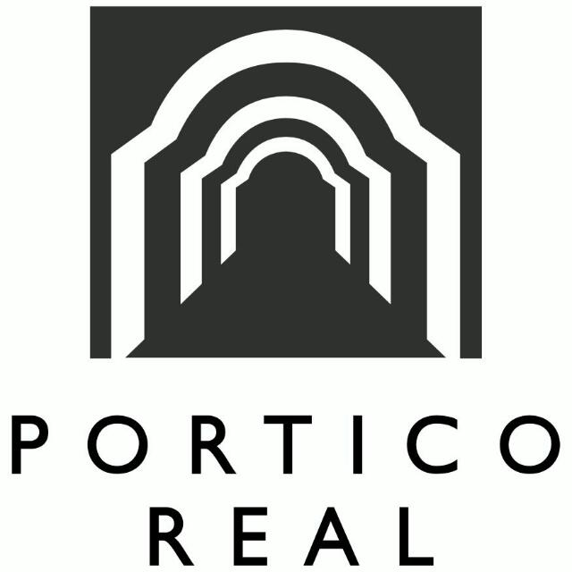
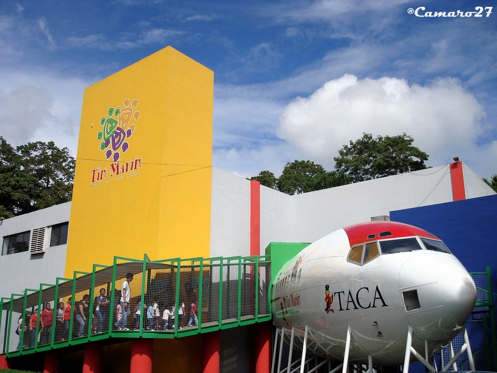
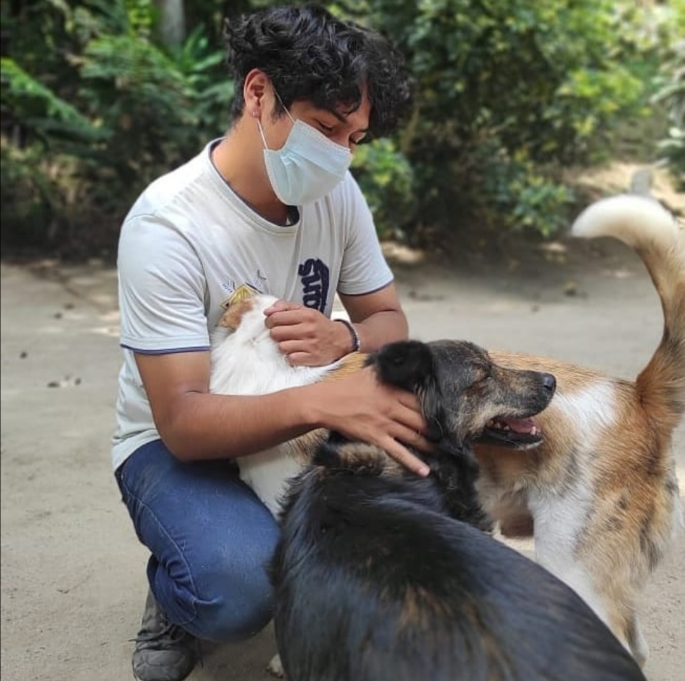

Portafolio

Experiencia laboral
- Pórtico real- Pasante de Contabilidad
- Pórtico real- Auxiliar de Contabilidad
- Pórtico real- Auxiliar de capacitación

Proyectos de clase
- Diseño de Servicios: Rediseño de la expericiencia de tomar un tour por el Museo Tin Marín
- Ingeniería de Procesos: Detección de cuellos de botella en el proceso de comunicación de la imprenta JetPrint e implementación de una propuesta para la solución de estos problemas.

Participación en asociaciones
- ESEN - Paw Print Cofundador, coordinador de proyectos, gestor de recursos humanos y administrador de finanzas.
- ESEN - SAE Miembro del equipo de Medios - encargado del Community Management.
- Asociación Scout de El Salvador Miembro "Scout", "Caminante" y "Rover. Obtención del rango de "Cordón" durante la permanencia en tropa. Planeación, coordinación y ejecución de proyectos en Caminantes y Rovers.
Otros conocimientos
- HTML intermedio
- CSS intermedio
- JAVASCRIPT intermedio
- EXCEL VBA intermedio
- DB Administration intermedio